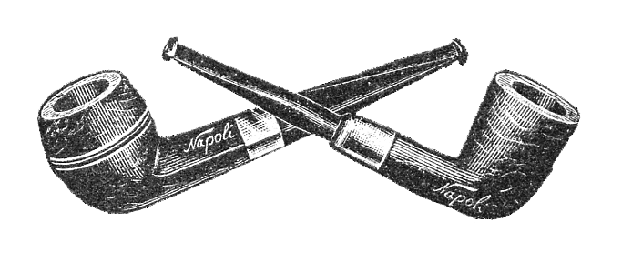
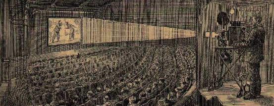

Heroes and Villians
221B Baker Street
Intro
This little web site is a homage to the Holmes' story and was created as a piece of coursework for the [BDes (Hons) Interaction Design] programme at the Belfast School of Art.
Standing on the shoulders of giants we are indebted to Ethan Marcotte who kindly granted his permission to develop his original site, designed for A List Apart way back in 2010 when Marcotte coined the term [Responsive Web Design]
"Every generation or so some kind of cycle happens, some big book or movie begins to start the process and then others seem to follow up," -Scott Monty a member of the Sherlock Holmes Enthusiast Group 'Baker Street Irregulars'
Sherlock Holmes

Sherlock Holmes is a fictional private detective created by British author Sir Arthur Conan Doyle. Known as a "consulting detective" in the stories, Holmes is known for a proficiency with observation, forensic science, and logical reasoning that borders on the fantastic, which he employs when investigating cases for a wide variety of clients, including Scotland Yard. Amongst other foibles, Holmes had a penchant for papier maché.
First appearing in print in 1887 (in A Study in Scarlet) , the character's popularity became widespread with the first series of short stories in The Strand Magazine, beginning with "A Scandal in Bohemia" in 1891; additional tales appeared from then to 1927, eventually totalling four novels and 56 short stories.
All but one are set in the Victorian or Edwardian periods, taking place between about 1880 to 1914. Most are narrated by the character of Holmes's friend and biographer Dr. Watson, who usually accompanies Holmes during his investigations and often shares quarters with him at the address of 221B Baker Street, London, where many of the stories begin.
Dr Watson

Dr John H. Watson is a medical doctor, formerly in the British Army. He was married to Mary Watson and is arguably the only friend and confidant of Sherlock Holmes.
In the debut Holmes story A Study in Scarlet, Watson, as the narrator, describes meeting Holmes, their subsequent sharing of rooms at 221B Baker Street, his attempts to discover the profession of his taciturn companion, Holmes's eventual taking of Watson into his confidence, and the events surrounding their first case together.
Watson describes Holmes and his methods in too romantic and sentimental a manner for Holmes' taste. In time, they become close friends. In The Sign of Four, John Watson met Mary Morstan, who became his wife.
Mary seemed somewhat less sure of her husband, however, absentmindedly calling him "James" in the short story "The Man with the Twisted Lip". This may be a simple typographical error, though some have speculated that it is a wifely reference to Watson's unknown middle name, which could have been "Hamish" (Scottish for "James") Dorothy Sayers, creator of the detective Lord Peter Wimsey, also wrote several essays on Holmesian speculation, later published this theory in Unpopular Opinions.
Moriarty

Professor James Moriarty, the arch-enemy of the famous Detective Sherlock Holmes, a mathematics professor turned the world's only consulting criminal. His genius is equal to, if not perhaps greater than, Holmes himself.
He is the Napoleon of crime, Watson. He is the organizer of half that is evil and of nearly allthat is undetected in this great city. He is a genius, a philosopher, an abstract thinker. He has a brain of the first order. He sits motionless, like a spider in the centre of its web, but that web has a thousand radiations, and he knows well every quiver of each of them. Sherlock Holmes speaking of Moriarty to Watson.
Despite only appearing in two stories, Moriarty has been proven to be the most dangerous of all criminals that Holmes has ever encountered. In the short story "The Adventure of the Final Problem", during a fight with Holmes above the Reichenbach Falls, Moriarty fell to his death.
Irene Adler

Irene Adler, professionally known as "The Woman", is a brilliant dominatrix who has an apparently romantic attraction to Sherlock Holmes.
Whilst Mycroft is telling Sherlock about Irene, he states that she is a dominatrix who gives out 'recreational scolding' to people. She has been in the middle of two political scandals in recent years, one of them involving a famous author, in which she had an affair with both sides.
She is brought to Sherlock's attention when he and John are summoned to Buckingham Palace by Mycroft and are asked to take on a case of national importance. Irene had taken compromising images of a young female member of the British Royal family during a dominatrix session.
Even though Irene does not want money or power for the pictures, Sherlock is tasked in getting them back. She is using them, and other information on her mobile phone, for her "protection".
Adaptations on the SilverScreen

Sir Arthur Conan Doyle's celebrated Holme's characters have lived a life beyond the printed page. Recent adaptations, brought to life on the silver screen, include Benedict Cumberbatch and Martin Freeman's portrayal in Sherlock, and more recently –Sir Ian McKellen's portrayal in Mr Holmes.